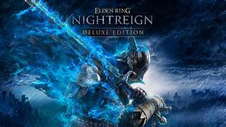

Elden Ring
Elden Ring é um RPG de ação desenvolvido pela FromSoftware, conhecido por seu mundo aberto desafiador e narrativa densa em colaboração com George R. R. Martin.
Exploração livre, lutas exigentes e chefes memoráveis fazem de Elden Ring uma experiência que recompensa paciência e estratégia.